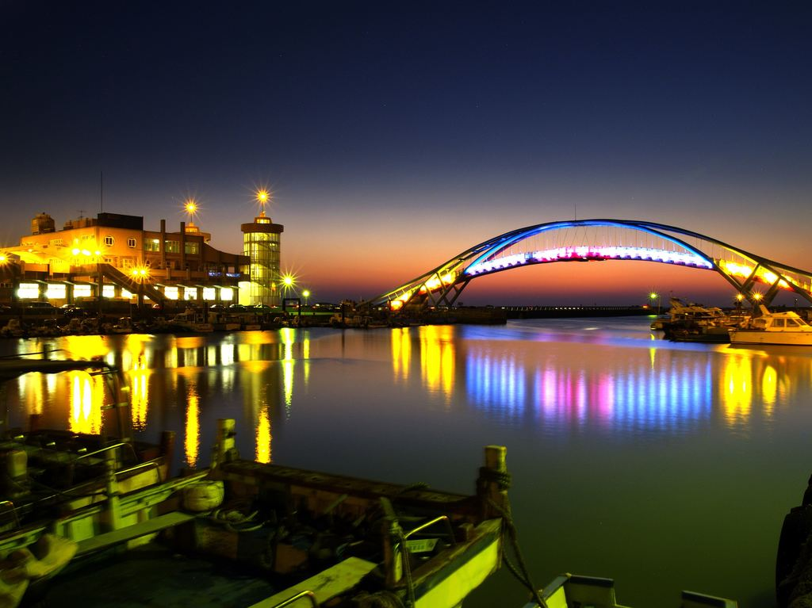
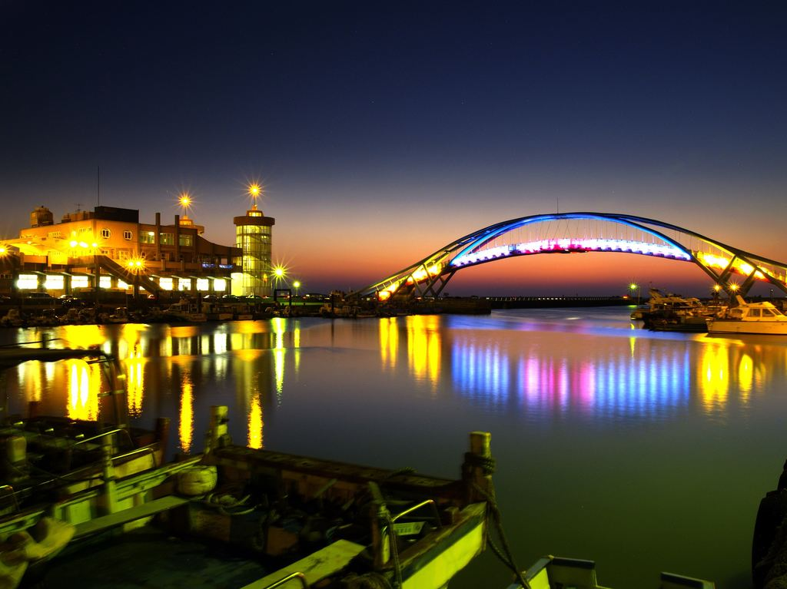

景點介紹-永安漁港
永安漁港位於社子溪出海口，原名崁頭屋港，是親子們一起騎車啖海鮮美食的好去處，離綠色隧道不遠的路程就可以輕鬆騎到，是全家人休閒娛樂的好去處。
永安漁港內建有一棟觀光漁市，外觀以龍蝦為設計風格，並有兩道透明螺旋梯。另外，永安觀海橋是永安漁港的一座跨港大橋，每逢傍晚五點後燈光點亮整條橋，照映在海面上非常浪漫，更是攝影人眼中的一大美景。
永安漁港位於社子溪出海口，原名崁頭屋港，是親子們一起騎車啖海鮮美食的好去處，離綠色隧道不遠的路程就可以輕鬆騎到，是全家人休閒娛樂的好去處。
永安漁港內建有一棟觀光漁市，外觀以龍蝦為設計風格，並有兩道透明螺旋梯。另外，永安觀海橋是永安漁港的一座跨港大橋，每逢傍晚五點後燈光點亮整條橋，照映在海面上非常浪漫，更是攝影人眼中的一大美景。
